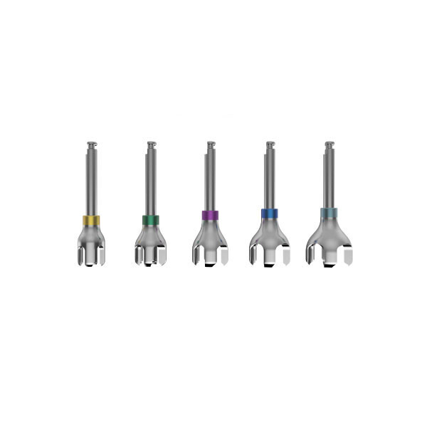
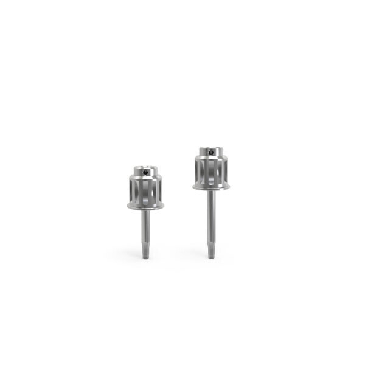
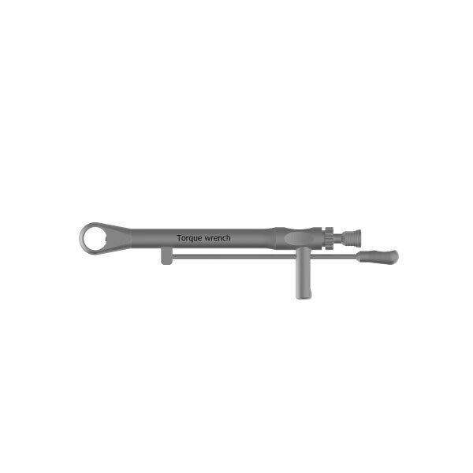
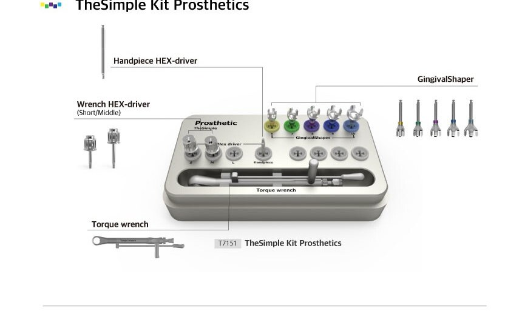

×3 · 6 · 7 · 9
GingivalShaper
Simple Abutment 숄더를 덮는 치은을 삭제해 마진을 확보합니다.
GingivalShaper ×3 · Grip Driver ×5 · Scan bar ×4 · Torque wrench ×1 · Kit Case ×1

Simple Abutment 숄더를 덮는 치은을 삭제해 마진을 확보합니다.

Hand S · M · L, Handpiece M · L. 힐링 · 어벗 체결용.

Hand Type 토크 렌치. 나사를 설정한 토크로 조입니다.

8mm · 16mm 각 2개. 스캔용으로 키트에 포함됩니다.
Simple Abutment와 같은 규격끼리 사용합니다. 예: GingivalShaper 8 → Simple Abutment 8S 또는 8M.
W-Adaptor 체결(A) → 방향 설정(B) → 눈금에 맞게 당김(C).
Follow color-band로 Surgical Kit와 규격을 이어 보철을 마무리합니다.
제조원 (주)애크로덴트 · 표기는 abuts.fit 스토어 상세 기준입니다. 품목 · 모델별 허가 · 신고 정보와 사용 방법은 제품 첨부문서에서 확인하십시오.
근원심 크기의 서지컬펜으로 드릴링을 시작하고, 서지컬핀으로 대합치 간격을 확인하며 식립합니다. 힐링 후 같은 색 규격의 어벗으로 보철을 이어갑니다.
색으로 구분된 키트에서 규격을 고르고, 사용 후 세척 · Autoclave 멸균(132°C, 15분)으로 기구를 관리합니다.
사용 치과 · 기공소의 후기는 동의를 받은 실제 후기만, 확인을 거쳐 이곳에 싣습니다.